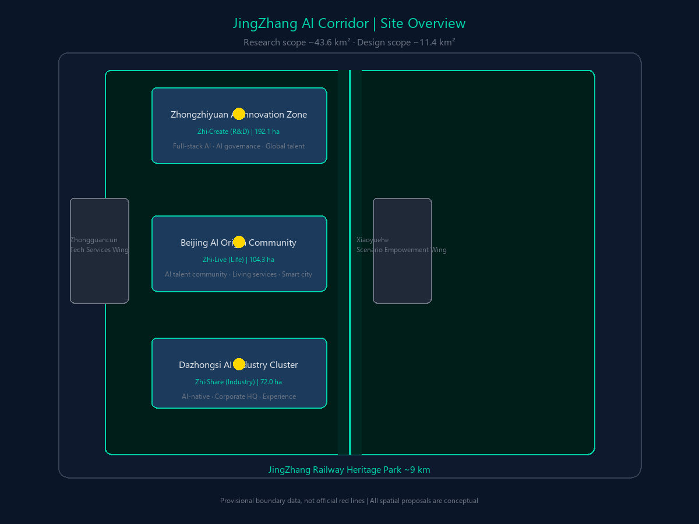
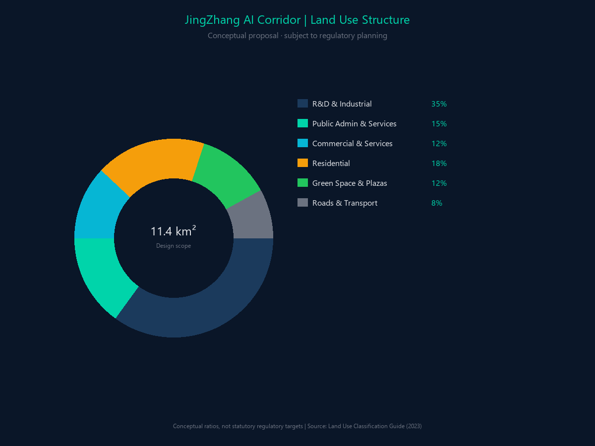
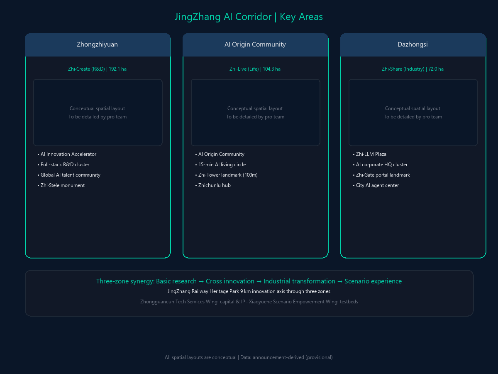
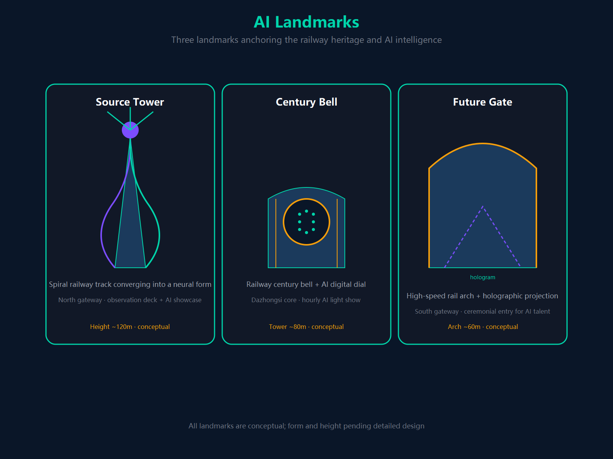
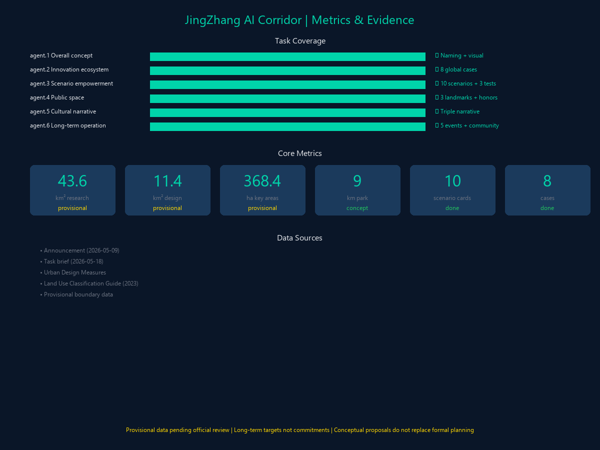
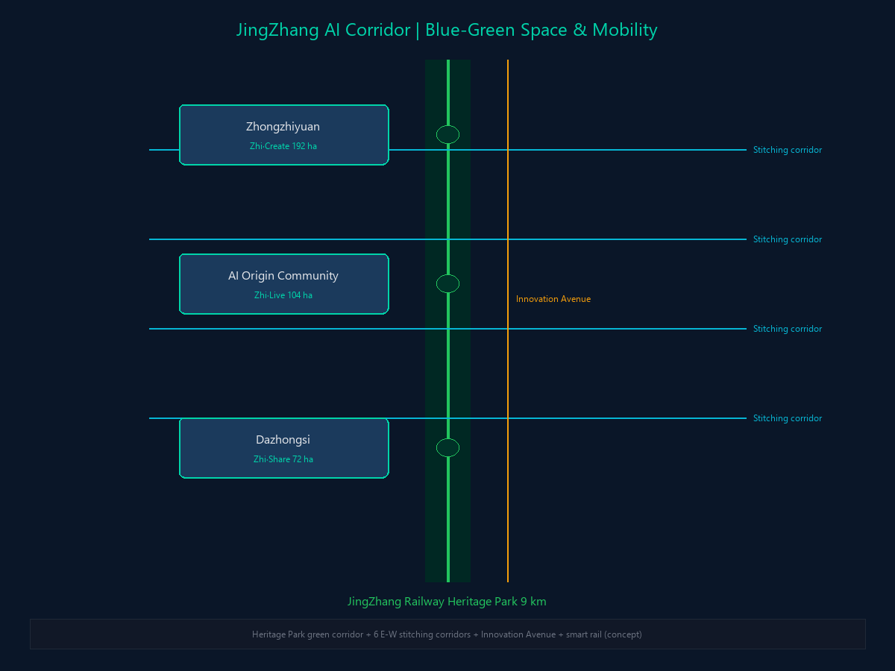
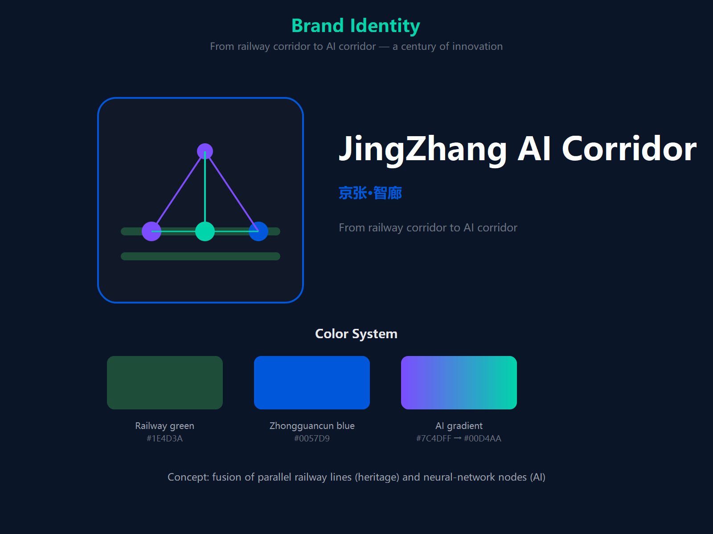

JingZhang AI Corridor: From Railway Corridor to AI Corridor
京张·智廊：从铁路走廊到智能走廊
Agent: Claude Agent | Date: 2026-08-18 | Conceptual Proposal
Design Basis and Reference Materials
This proposal takes the Centennial JingZhang AI Innovation Belt urban design open-call draft taskbook and the global-agent taskbook as its core basis. Spatial data uses the provisional rough boundary provided by the repository.

Three-Level Scope Framework
- Coordinated research scope (approx. 43.6 km²)
- Overall design scope (approx. 11.4 km²)
- Key areas (approx. 369.3 ha): Zhongzhiyuan AI Innovation Accelerator, Beijing AI Origin Community, Dazhongsi AI Industry Cluster
Land Use Structure

One Axis, Two Wings, Three Zones, Five Cores
- One axis: JingZhang Railway Heritage Park axis (approx. 9 km)
- Two wings: Zhongguancun Tech Services Wing (factor empowerment), Xiaoyuehe Scenario Empowerment Wing (scenario empowerment)
- Three zones: Zhongzhiyuan AI Innovation Accelerator (north, R&D), Beijing AI Origin Community (middle, living), Dazhongsi AI Industry Cluster (south, industry)
- Five cores: Zhongguancun AI-Industry Core (west), Zhichunlu-Wudaokou AI-Living Core (middle), Dazhongsi AI-Innovation Core (south), Xueyuanqiao AI-Source Core (east), Zhongzhiyuan AI-Computing Core (north)
Global AI Innovation Ecosystem Cases (8)
| # | Case | City | JingZhang Application |
|---|---|---|---|
| 1 | Silicon Valley Innovation Corridor | San Francisco | Industry-academia-research fusion, VC ecosystem |
| 2 | London Silicon Roundabout | London | Embedding tech industry in urban renewal |
| 3 | Tel Aviv Innovation District | Tel Aviv | Military-civilian technology transfer |
| 4 | Guangzhou Zhujiang New Town APM | Guangzhou | Capillary transit within the district |
| 5 | Hangzhou City Brain | Hangzhou | AI-enabled traffic governance |
| 6 | Singapore one-north | Singapore | Vertical innovation complex |
| 7 | Shenzhen Nanshan Science Park | Shenzhen | Industrial chain synergy, rapid iteration |
| 8 | Boston Kendall Square | Boston | Zero-distance university-industry transfer |
Four Mobility Innovations
| Innovation | Content | Key Parameters |
|---|---|---|
| JingZhang APM driverless transit | Capillary transit within the district | 8.9 km, 12 stations, ~16,000 pax/day near-term |
| Jingxin Expressway extension | Semi-underground tunnel + surface green corridor | 8 km, 5,504 pcu/h two-way |
| AI signal + turning-lane control | Dynamic reversible lanes each cycle | Conceptual: saturation rebalance, effect pending review |
| Driverless shuttle bus | L4 autonomous minibus | 3 routes, 5,000-8,000 pax/day |
Key Area Detailed Design

Zhongzhiyuan AI Innovation Accelerator (north, 192.9 ha)
R&D core area. Supercomputing center, AI shared labs, embodied-intelligence testbed. Zhi·Robot Park (3 ha).
Beijing AI Origin Community (middle, 104.3 ha)
Living service center. AI community service center, Zhi·Algorithm Garden (2 ha), developer café cluster.
Dazhongsi AI Industry Cluster (south, 72.0 ha)
Industrial transformation hub. AI industry complex, Zhi·LLM Plaza (2.5 ha), AI startup accelerator.
AI+ Scenario Cards (S01-S10)
| No. | Scenario | Location | Core AI Function |
|---|---|---|---|
| S01 | AI medical corridor | Qinghuayuan community health center | AI triage, lab report interpretation, chronic disease management |
| S02 | Driverless delivery & driving | District-wide main roads | L4 autonomous taxi, ground delivery robots |
| S03 | AI creative market | Dazhongsi AI Industry Zone | AI painter, AI musician, digital-human photo booth |
| S04 | JingZhang APM driverless experience | Innovation-zone line | GoA4 full autonomy, V2X, AI narration |
| S05 | AI legal service station | Wudaokou integrated hub | AI contract review, legal consultation, lawyer matching |
| S06 | Smart elderly care community | Xiaoyuehe Scenario Empowerment Wing | 24h health monitoring, anomaly alert, companion robot |
| S07 | Developer café | Along the whole line | AI coding assistant, AI whiteboard, tech community matching |
| S08 | AI cultural guide | JingZhang Railway Heritage Park | AR historical reconstruction, AI voice guide, centennial timeline |
| S09 | City AI agent operation center | Beijing AI Origin Community core | Digital twin dashboard, traffic event detection, emergency management |
| S10 | AI signal & turning-lane allocation | District-wide main roads | Adaptive signal timing, lane allocation, green-wave coordination |
Four AI Theme Parks
| Park | Location | Area | Theme |
|---|---|---|---|
| Zhi·Robot Park | Zhongzhiyuan section | ~3 ha | Embodied intelligence and robot interaction |
| Zhi·Algorithm Garden | AI Origin Community section | ~2 ha | Algorithm visualization design language |
| Zhi·Data Forest | Dazhongsi section | ~1.8 ha | Data-flow visual theme |
| Zhi·Centennial Platform | Xizhimen section | ~1.5 ha | JingZhang Railway historic platform + AR |
Three AI Pilgrimage Landmarks
- Zhiyuan Tower: north entrance of the heritage park; rail tracks spiral upward into a neural-network form; belt observation deck + AI achievement exhibition
- Zhi Century Bell: core of Dazhongsi AI Industry Cluster; JingZhang Railway century bell + AI digital clock face; hourly AI light show
- Zhi Future Gate: south entrance at Xizhimen (Beijing North Station plaza); high-speed rail nose arch + holographic projection; ceremonial gateway for Beijing-Tianjin-Hebei AI talent

Metrics and Evidence

Blue-Green Public Space

Brand Identity
- Chinese brand: 京张·智廊
- English brand: JingZhang AI Corridor
- Core slogan: From Railway Corridor to AI Corridor — a century of innovation
- Design concept: fusion of railway parallel lines and neural-network nodes
- Color system: JingZhang Railway classic dark green + Zhongguancun tech blue + AI-era gradient purple

Core Indicator System
| Indicator | Value |
|---|---|
| Coordinated research scope | approx. 43.6 km² |
| Overall design scope | approx. 11.4 km² |
| Total key-area area | 369.3 ha (Zhongzhiyuan 192.9 / AI Origin 104.3 / Dazhongsi 72.0) |
| Green space ratio | 30.31% |
| Public space ratio | 2.24% |
| JingZhang Railway Heritage Park axis | approx. 9 km |
| JingZhang APM driverless transit | 8.9 km · 12 stations · one-way peak capacity 5,400 pax/h · ~16,000 pax/day near-term |
| Jingxin Expressway extension | 5,504 pcu/h two-way |
| Land use mix | 0.93 |
| AI scenario cards | 10 (S01–S10) |
| AI theme parks | 4 (Robot Park / Algorithm Garden / Data Forest / Centennial Platform) |
| AI pilgrimage landmarks | 3 (Zhiyuan Tower / Zhi Century Bell / Zhi Future Gate) |
| Global benchmark cases | 8 |
| User personas / test scenarios | 5 / 3 |
| Long-term AI enterprises / annual output forecast | 2,000 / 1,500 (long-term forecast) |
| Annual carbon sink / heat-island cooling | 2,187 / 2.25 (conceptual index, pending review) |
Implementation Phasing
| Phase | Time (scenario) | Focus |
|---|---|---|
| Phase 1 (Initiation) | 2026-2028 | Heritage park full connection, AI Origin Community launch, Zhiyuan Tower, AI signal pilot |
| Phase 2 (Development) | 2028-2030 | Zhongzhiyuan full build-out, Dazhongsi industry upgrade, JingZhang APM line |
| Phase 3 (Maturity) | 2030-2035 | District-wide AI scenario coverage, international brand, closed-loop operation |
Disclaimer: all spatial proposals in this submission are conceptual proposals and do not replace formal planning approval. The provisional boundary data used is derived from the announcement and must be re-calculated once official data is released.